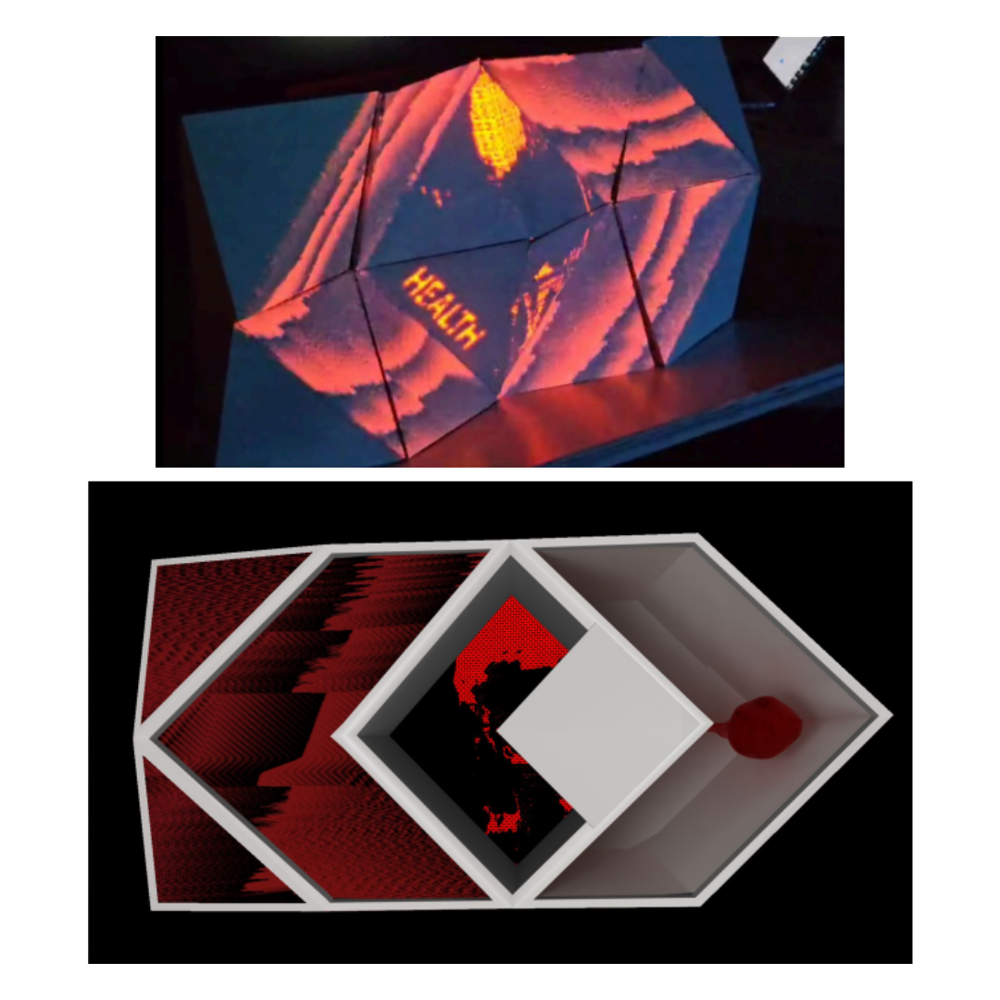
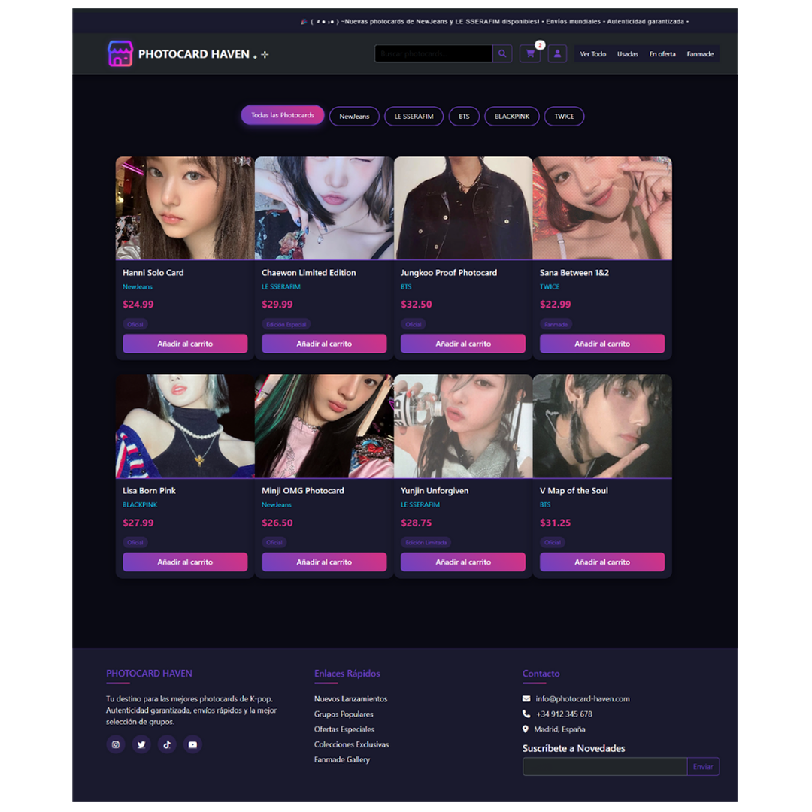
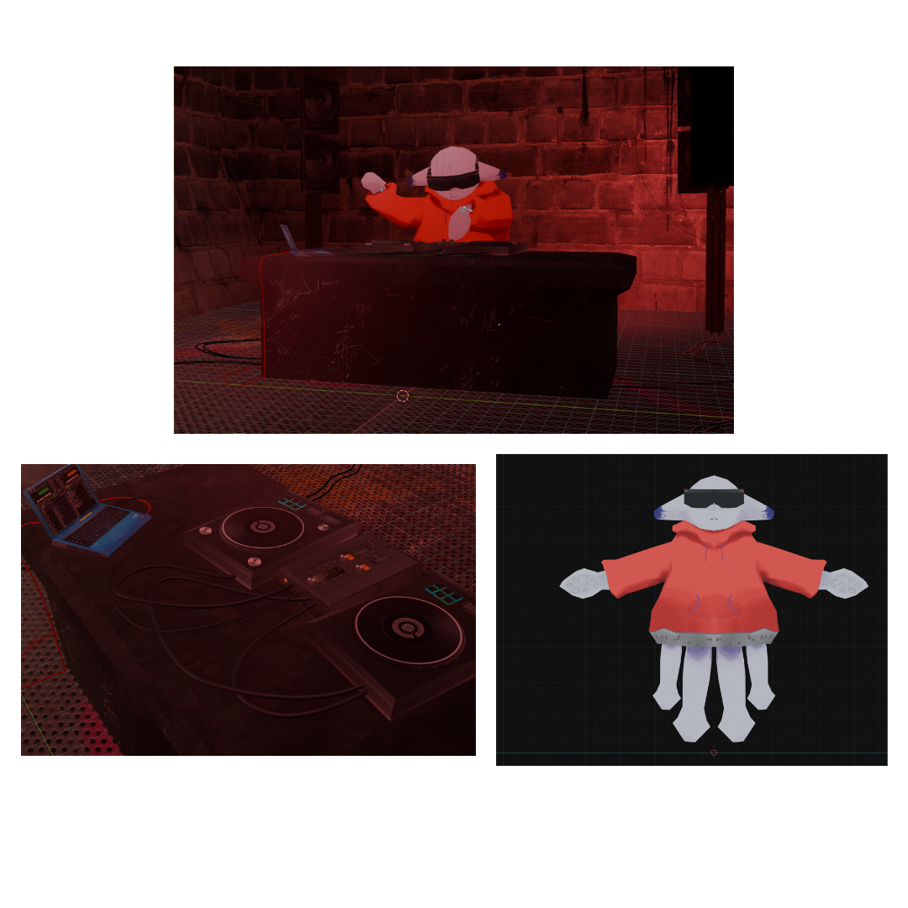
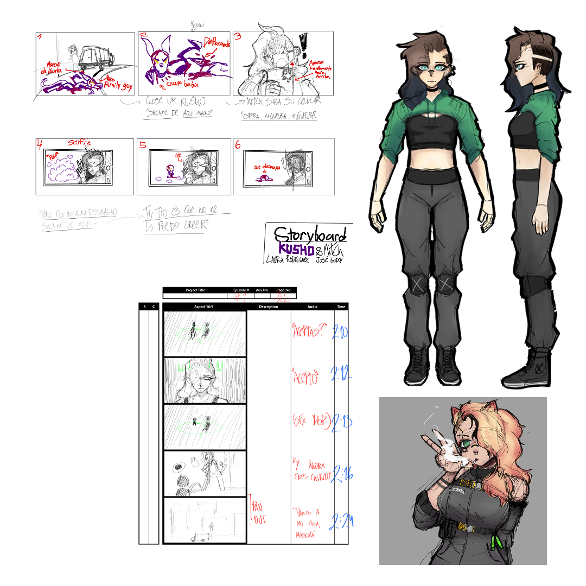
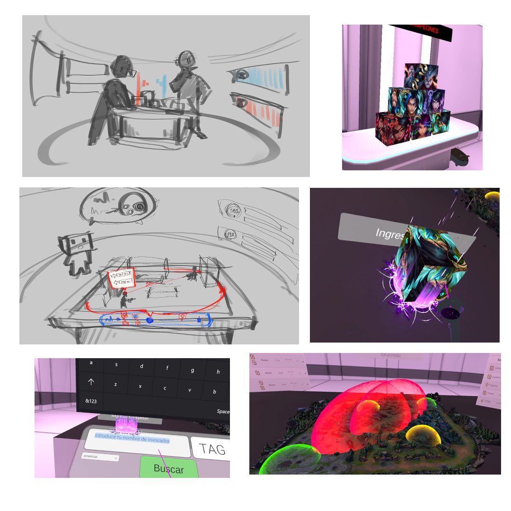

Durante el segundo semestre de 2025, en el ramo de taller, se nos indicó crear una aplicación o objeto que ayudara la accesibilidad a la banca, con la ayuda de la compañía NTT Data.
TradeMentor
Junto a mi compañero Julián Gómez decidimos abordar un área con una elevada curva de aprendizaje: las inversiones intradía. Tras múltiples iteraciones a lo largo del semestre, desarrollamos un prototipo que no solo integraba un simulador de futures trading, sino también una sección educativa destinada a orientar al usuario y reducir la percepción de complejidad.
A través de este proyecto fortalecí de manera significativa mis capacidades de investigación y mejoré de forma exponencial mis habilidades en el uso del entorno de trabajo de Figma.
2025
Equipo
Julián Goméz
Recursos
Figma

3D/AudioVis
Heaven and Hell
Durante el segundo semestre de 2023, en el ramo Taller de Diseño de Interacción, se nos encargó crear una propuesta visual aplicable a un escenario real, incorporando conceptos de mapping, sincronización audiovisual y exploración de ilusiones ópticas.
Heaven and Hell
Para este proyecto, junto a mi compañero Joaquín Calderón desarrollamos un sistema de visuales basadas en deformaciones ópticas y reactividad al audio, tomando referencias de mapping escénico y estética glitch. El objetivo era crear una experiencia inmersiva que fuese técnicamente posible de proyectar en un concierto, utilizando una base 3D animada en conjunto con visuales generadas en Resolume. Durante el proceso experimentamos con FFT para obtener una lectura sonora más precisa, construimos prototipos funcionales y generamos un modelo capaz de integrar animaciones en Blender con efectos reactivos en tiempo real. Este proyecto fortaleció mis habilidades en visualización, prototipado audiovisual y manejo de software profesional para experiencias multimedia.
2023
Equipo
Joaquín Calderón
Recursos
Resolume
MadMapper
Blender
ClipStudio

UI/UX
Photocard Heaven
Durante el septimo semestre en 2025, se nos indicó en el ramo de desarrollo web crear una pagina de e-commerce utilizando el framework de wordpress y el plugin de woocomerce.
Photocard Heaven
En este proyecto decidí desarrollar un marketplace de photocards (tarjetas coleccionables de K-pop), en el cual los usuarios pueden registrar las tarjetas que poseen e intercambiarlas o adquirir otras. Además, a modo de desafío personal propuesto por el profesor, incorporé animaciones con flitter que se activan cuando el usuario selecciona o filtra photocards de grupos específicos.
Este proyecto me permitió poner a prueba mis habilidades en HTML y CSS, además de constituir mi introducción al desarrollo de scripting en JavaScript.
2025
Mención Honorable
K-club UDD
Recursos
HTML
CSS
JavaScript
Plugin Woocomerce

3D/Animación
Entry_Chubi
Este proyecto fue mi participación en el concurso de Did_awards 2025, donde se nos pidió crear un fanart de la mascota oficial de Diseño en interacción digital llamada Chubi.
Entry_Chubi
Durante el proyecto, modelé y animé a Chubi en un boiler room 3D utilizando Blender, aplicando técnicas de rigging y texturización en clip studio paint para darle vida al personaje. Posteriormente, integré la animación en Adobe After Effects para añadir efectos visuales y mejorar la presentación final. Este proyecto me permitió profundizar mis habilidades en modelado 3D, animación y postproducción, además de explorar mi creatividad al interpretar y representar a la mascota de manera única.
2025
Recursos
Blender
ClipStudio
Adobe After Effects

Animación/Ilustración
Kusho & Mitch
Durante el primer semestre de 2024, en Taller de Movimiento se nos pidió hacer un character sheet, storyboard, y animación a lo largo del semestre utilizando nuestros programas a dispocisión.
Kusho & Mitch
Para el proyecto con compañera Laura Rodriguez, utilicé principalmente el software de ilustración Clip studio paint para el Storyboard, Character Sheet y la animación, al igual que hacer looks alternativos de el personaje principal. Este proyecto puso a prueba mis habilidades como trabajador en equipo, ilustrador y animador. Me hizo tomar en cuenta las restricciones que teníamos al utilizar 2D y mis capacidades para editar en Adobe after effects.
2024
Equipo
Laura Rodriguez
Recursos
ClipStudio
Adobe After Effects

3D/VR
InsightVr
Durante el primer semestre de 2024, se nos encargó en el ramo de Diseño de Interacción desarrollar una propuesta tecnológica que resolviera un problema real de usabilidad dentro del ámbito digital. En este caso, el desafío consistía en repensar cómo los usuarios interactúan con estadísticas de esports, proponiendo una experiencia más inmersiva, clara y atractiva.
InsightVr
Para este proyecto decidí abordar la falta de dinamismo e interactividad presente en los sitios web tradicionales de estadísticas, creando un hub que permitiera explorar datos de League of Legends mediante una interfaz más intuitiva y espacial. Aunque inicialmente se evaluó desarrollar la experiencia en VRChat, finalmente opté por realizar el proyecto completamente en Unity, lo que permitió un mayor control sobre la lógica, el diseño visual y la integración de datos. A través de prototipos funcionales y un enfoque centrado en la usabilidad, logré construir un entorno navegable donde las estadísticas se presentan de manera modular y clara, fortaleciendo mis habilidades en integración de APIs, visualización de datos, prototipado 3D y diseño de experiencias interactivas.